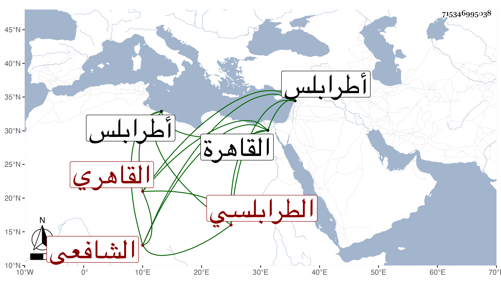

0902Sakhawi.DawLamic.ITO20230111-ara1.EIS1600.715346995038
Biography ID: 715346995038
560
محمد بن حسن بن عبد الوهاب ناصر الدين الطرابلسي ثم القاهري الشافعي . ولد كما بخطه في سنة أربع وستين وسبعمائة وقال إنه سمع بطرابلس على الشهاب أحمد بن الحبال وابن البدر وقدم القاهرة فأخذ عن العز بن جماعة ولازم دروسه في فنونه ثم لازم بعده تلميذه الجمال الأمشاطي ، لقيه ابن الأسيوطي قريب سنة سبعين وقال إنه كان مستحضرا .
